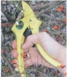

If you have a lot of pruning to do this spring, and especially if you have arthritis in your hands, you may want to consider using a pruner with extra power. We tested the Fiskars PowerGear pruner and the Florian Ratchet-Cut pruner against a conventional pruner and found huge differences in the cutting power of the three tools. Even using both hands, we could not cut through a 3/4-inch branch of dead locust wood with the conventional pruner.
The Fiskars PowerGear definitely cut the locust better than the regular pruner, and we liked the rotating grip and general feel of the Fiskars. But the patented ratchet mechanism of the Florian pruner had even more cutting power than the Fiskars.
You pump the Florian pruner several times to work the ratchet, but the resulting cutting power is truly amazing. Even though the Florian handles are plastic, the lightweight tool comes with a lifetime warranty, and sells for about $37. A RatchetCut lopper and mini-lopper are also available, from www.florianratchetcut.com . The Fiskars PowerGear pruner also has a lifetime warranty and sells for about $25. It's available at many hardware stores and home-improvement centers.
|
 MICHAEL REEDER With their ratchet-action blades, Florian pruners earn top marks. |
|
|